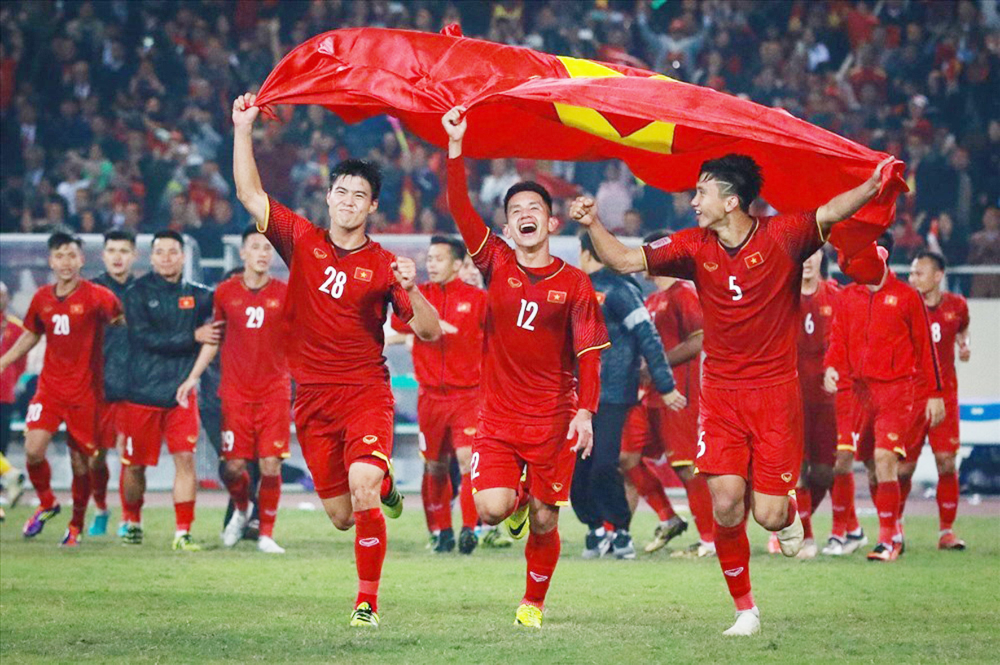
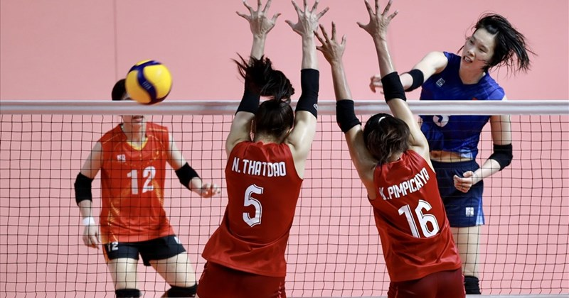

GỚI THIỆU CÁC HOẠT ĐỘNG NGOẠI KHÓA
Trường THPT Lương Sơn có bề dày thành tích về học tập và các hoạt động thể thao, văn nghệ của tỉnh.
Các câu lạc bộ ngoại khóa hoạt động sôi nổi và luôn được nhà trường tạo điều kiện để sinh hoạt.
Nhưng năm qua, trường đạt nhiều thành tích trong các cuộc thi cấp tỉnh, huyện.
- 03 HCV cấp tỉnh môn Bơi lội
- 02 HCV, 06 HCB và 05 HCĐ cấp tỉnh các môn Võ Thuật
- 01 giải ba môn Bóng đá nam cấp tỉnh
- 01 giải nhì, 02 giải ba Hội thi biểu diễn âm nhạc cấp huyện
Theo dõi lịch hoạt động các CLB thể thao
Lịch hoạt động CLB Thể thao
| Bộ môn |
GV phụ trách |
Ngày |
| Thứ 2 |
Thứ 3 |
Thứ 4 |
Thứ 5 |
Thứ 6 |
| Bóng đá |
Thầy Khải |
|
X |
|
|
X |
| Bóng chuyền |
Cô Lan |
X |
|
|
|
|
| Bóng rổ |
Thầy vũ |
|
|
X |
|
|
| Võ thuật |
Thầy Hoàng - Karatedo
Thầy Đức - Taekwondo
Thầy Thắng - Vivonam
|
X |
X |
|
X |
|
| Bơi |
Cô Bích |
|
|
X |
|
X |
CÂU LẠC BỘ BÓNG ĐÁ
Trong thời gian tới, bóng đá Việt Nam sẽ hướng tới các mục tiêu chính gồm: Đội tuyển quốc gia thi đấu các trận còn lại tại vòng cuối FIFA World Cup 2022, cố gắng tận dụng tối đa cơ hội này để tiếp cận với trình độ chơi bóng đỉnh cao của đấu trường châu lục và thế giới. Tiếp đó, đội tuyển U23 quốc gia với thành phần nòng cốt được tuyển chọn từ giải U21 quốc gia vừa qua sẽ tham dự giải vô địch U23 Đông Nam Á 2022 diễn ra tại Campuchia trong tháng 2 tới đây. Về phía đội tuyển nữ cũng sẽ được tập trung đầu tư để hướng tới mục tiêu cạnh tranh suất tham dự VCK FIFA World Cup nữ 2023. Trong khi đó, đội tuyển U23 quốc gia sẽ tham dự VCK U23 châu Á 2022.

baoBinhPhuoc.com.vn
Quay lên trên
CÂU LẠC BỘ BÓNG CHUYỀN
Hôm nay 8/8 và rạng sáng ngày 9/8 theo giờ Việt Nam sẽ diễn ra 2 trận bán kết môn Bóng chuyền Olympic 2024 nội dung nữ. Tâm điểm của loạt trận này là màn chạm trán giữa Ý và Thổ Nhĩ Kỳ - hai đội tuyển sở hữu những ngôi sao sáng giá nhất làng bóng chuyền thế giới ở thời điểm hiện tại như Paola Egonu hay Melissa Vargas, v.v.

theothao247.vn
Quay lên trên
CÂU LẠC BỘ BÓNG RỔ
Bóng rổ là một môn thể thao đồng đội, trong đó hai đội, thường gồm năm hoặc ba cầu thủ, đối đầu nhau trên một sân hình chữ nhật hoặc nửa sân đối với bóng rổ ba đấu ba, cạnh tranh với mục tiêu chính của ném một quả bóng (đường kính khoảng 9,4 inch (24 cm) qua vòng đai của rổ (đường kính 18 inch (46 cm) cao 10 foot (3,048 m) được gắn trên một tấm bảng ở mỗi đầu của sân) trong khi ngăn chặn đội đối phương làm điều tương tự vào rổ của phe mình.
 vn.wikipedia.org
Quay lên trên
vn.wikipedia.org
Quay lên trên
CÂU LẠC BỘ VÕ THUẬT
Chiều ngày 4/8 đã diễn ra Lễ bế mạc của Giải Vô địch Vovinam các CLB tỉnh Quảng Bình lần thứ IV – 2024. Giải là dịp để các VĐV có cơ hội cọ xát cũng như để Vovinam tỉnh Quảng Bình chuẩn bị lực lượng hướng đến giải Vovinam Toàn quốc cũng như Giải Vovinam miền Trung – Tây Nguyên dự kiến diễn ra vào khoảng cuối tháng 8 (23 – 28/08)
vothuat.vn
Quay lên trên
CÂU LẠC BƠI
Bơi có thể là hoạt động đáng sợ đối với những người chưa từng học bơi, nhưng chúng ta hoàn toàn có thể chế ngự nỗi sợ hãi này bằng cách thử tập bơi theo hướng dẫn dưới đây. Biết bơi và vui đùa cùng làn nước là một hoạt động vô cùng thú vị, ngoài ra, kỹ năng bơi còn giúp bạn thoát khỏi các tình huống nguy hiểm khi chẳng may bị rơi xuống nước. Tất cả những gì bạn cần làm là thoải mái và thả lỏng cơ thể khi ở dưới nước, tập một số kiểu bơi cơ bản và dần nâng cao kỹ năng bơi của mình.
wikihow.vn
Quay lên trên
Quay lên trên